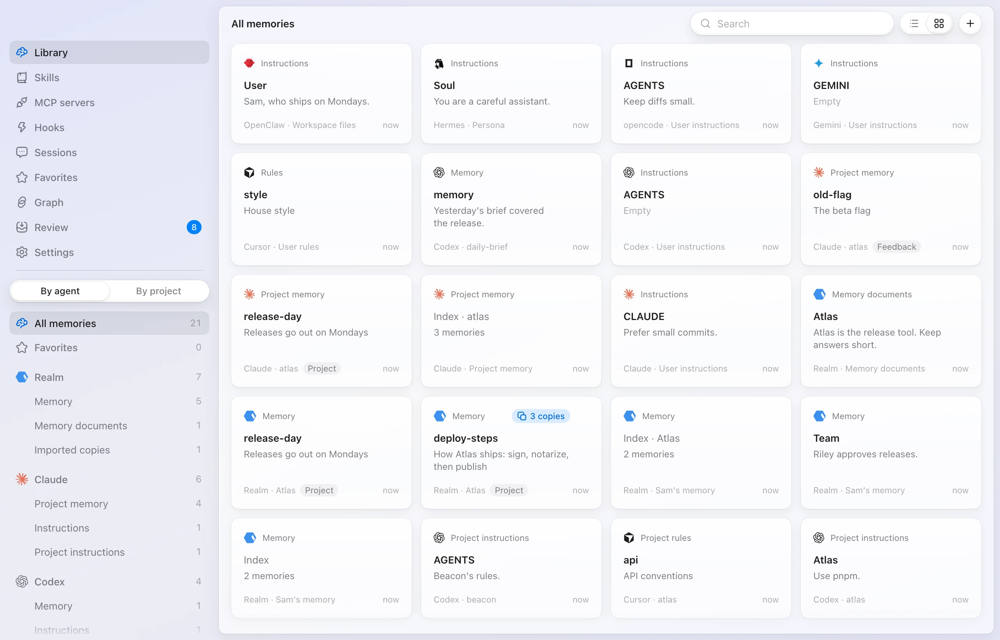
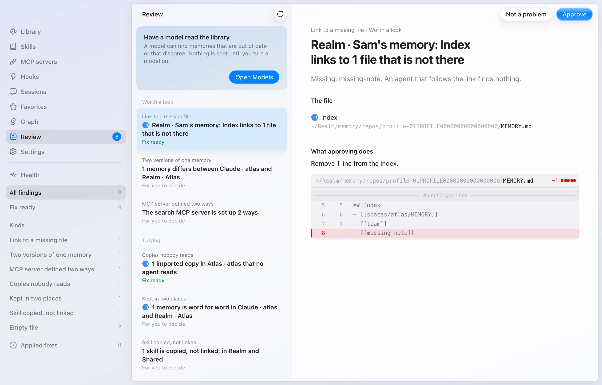
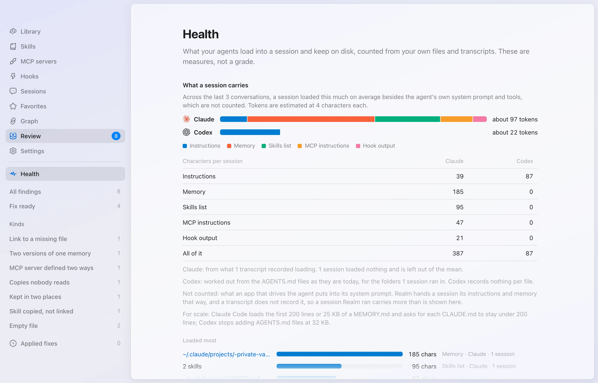
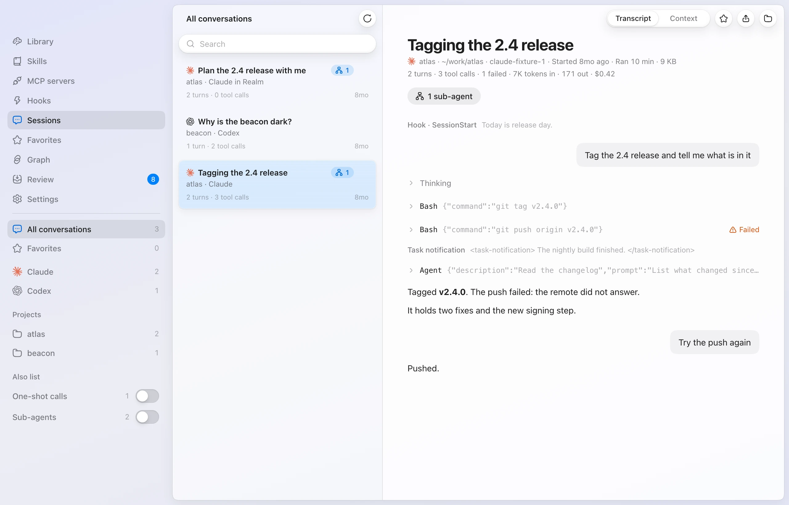
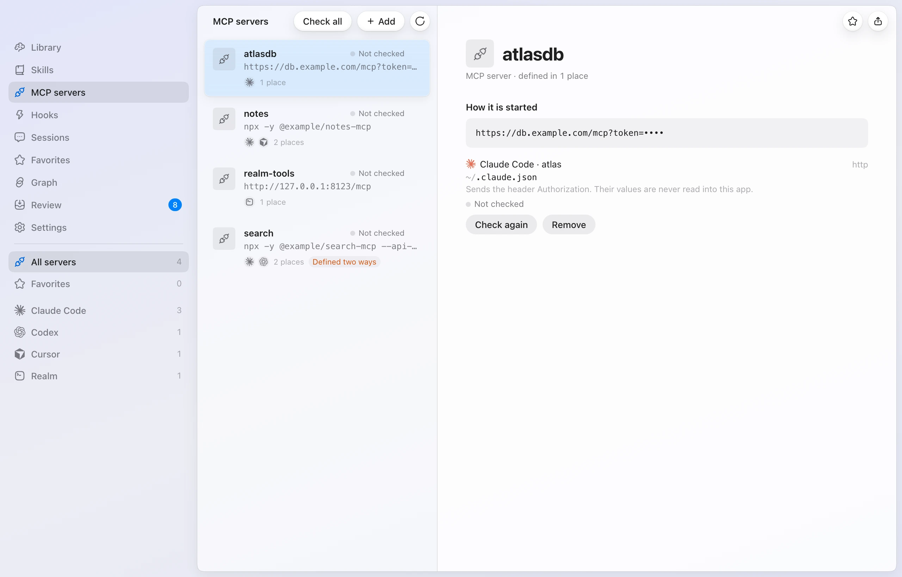
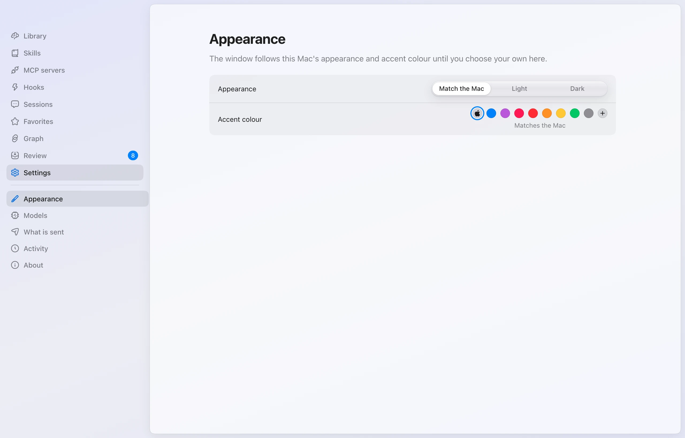

Stow is a Mac app that gathers every AI agent's memory, instructions, skills and servers in one place, and proposes cleanups you approve. Your files stay where they are.
macOS 13 or later · Apple silicon and Intel · Free and open source
CLAUDE.md
AGENTS.md
rules.mdc
GEMINI.md
MEMORY.md
AGENTS.md
SOUL.md
USER.md
Claude Code keeps what it knows in one folder.
Codex in another.
Cursor,
Gemini,
Realm,
opencode,
Hermes and
OpenClaw each have their own.
Stow reads them all where they sit and keeps only an index, so removing it loses nothing.
One window for all of it.
Every memory and instruction file. A grid of cards or a list, grouped by agent or by project, with copies of the same memory collapsed into one.






Tidy, with your say‑so.
These are small working copies of what the app does. Press them.
Review
Every fix is a diff you approve, and can undo.
Links to 1 file that is not thereWaiting
~/.claude/CLAUDE.md
12- Run the checks in docs/checks.md first.
13- See notes/old-setup.md for the staging keys.
14- Never commit to main.
Rules find duplicates, broken links, orphans, empty files an agent still loads, and setups that conflict.
A second reader
A model reads for what rules cannot see. Only if you turn it on.
Out of dateA note that no longer matches the project.
ContradictoryTwo instructions that cannot both be followed.
Off. Nothing has been sent anywhere.
Library
Copies of one memory collapse into one.
One list or a grid of cards, by agent or by project, searchable. Star what you return to and filter by Favorites.
Sessions
What a session had loaded.
Instructions
Memory
Skills
MCP servers
Transcripts from Claude and Codex, indexed where they are.
Health
What loads before your first word.
Where the storage goes
What tidying would save
Counted from your own files and transcripts.
Skills, MCP servers, Hooks
Every copy, where it is defined, and whether it connects.
github
postgres
files
Add and remove servers across agents, and bring in skills from a repository.
A Mac app
System material, the Mac's own type, and your accent colour.
Pick one: the working copies on this page follow, as the app follows your Mac. Light and dark.
One place for what your agents know.
Everything is read, indexed and tidied on your Mac. There is no account to make.